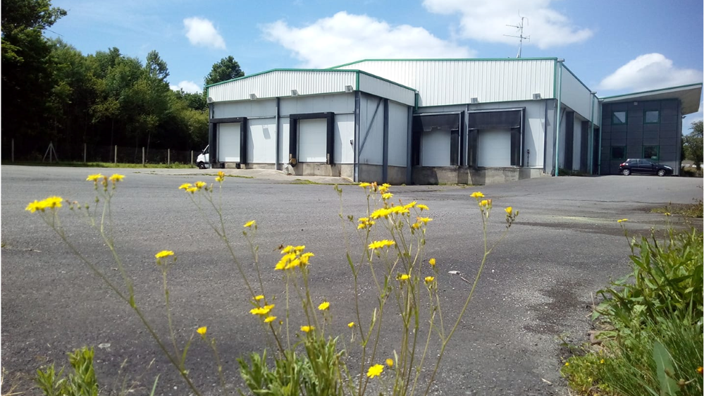

Présentation

Les abattoirs du couserans c'est avant tout une coopérative au service de l'intérêt collectif où chacun des utilisateurs est impliqué dans la vie de l'entreprise.
Outil indispensable, les abattoirs du Couserans ont été créés sous forme d'une Société Coopérative à Intérêt Collectif (SCIC) pour impliquer et mieux servir les acteurs locaux.
Cet outil valorise les circuits courts, le travail artisanal et une réponse personnalisé au besoin de l'éleveur et des professionnels.
Il se veut être la vitrine de nos filières et de notre territoire ariègeois.
La structure a taille humaine et les cadences faibles permettent à notre équipe de porter une grande attention au respect de la règlementation et du bien-être animal.
Les abattoirs du couserans c'est avant tout une coopérative au service de l'intérêt collectif où chacun des utilisateurs est impliqué dans la vie de l'entreprise.
Les informations utiles et un mode d'emploi complet pour utiliser nos services :
Notre engagement dans les démarches qualité est grand. Nous validons les labels :
Le statut de coopérative d'intérêt collectif nous permet de vous proposer des prestations avec des tarifs adpatés.
Les tarifs sont votés en conseil d'adminisatration.

Les événements organisés par notre équipe.
SCIC SA Centre d’abattage et de transformation du Couserans
ZI du pradas
09 190 LORP SENTARAILLE
Tél : 05.34.14.39.00